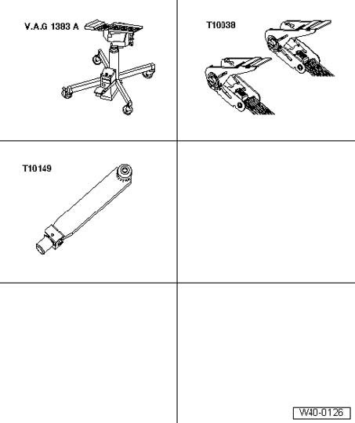
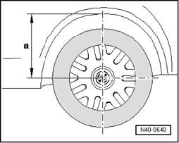
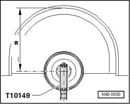

Front Suspension (AWD)
Bringing wheel bearing to curb weight position

Special tools, testers and auxiliary items required
^ Engine/transmission jack V.A.G 1383 A
^ Tightening strap T10038
^ Wheel hub support T10149
All suspension component bolts with bonded rubber bushings must be tightened with the suspension in the curb weight position (unladen).
Bonded rubber bushings have a limited twisting range.
Before axle components with bonded rubber bushings are tightened, they have to be brought to a position which matches the position when the vehicle is being operated (curb weight position).
Otherwise the bonded rubber bushing will be distorted, resulting in reduced service life.
By raising the suspension on one side using engine/transmission jack V.A.G 1383 A and wheel hub support T10149, this position can be simulated on the hoist.

- Before starting work, take a measurement - a - with a tape measure from the center of the wheel to the lower edge of the wheelhousing.
Measurement must be taken in the curb weight position (unladen).
- Note measured value. This is required for tightening the bolts/nuts.
Before the axle is raised on one side, the vehicle must be secured to the lifting arms on the hoist using the tightening straps T10038.
CAUTION! If the vehicle is not tied down there is a danger that the vehicle can slide off the hoist!
- Turn wheel hub until one of the holes for the wheel bolts is at the 12 o'clock position.
- Instal wheel hub support T10149 with a wheel bolt.
CAUTION! On vehicles with decouplable stabilizer bars, the stabilizer bars must be coupled in before beginning work. Otherwise, the risk of injury exists when decoupled stabilizer bars become unintentionally coupled.
The nuts/ bolts can only be tightened if dimension - a - is the same as the measurement taken between the center of the wheel hub and the lower edge of the wheelhousing before work started.

- Raise wheel bearing housing using Engine/transmission jack V.A.G 1383 A until dimension - a - is reached.
CAUTION!
^ Do not raise or lower the vehicle if the engine and transmission lift is under the vehicle.
^ Do not leave engine/transmission jack V.A.G 1383 A under the vehicle longer than necessary.
- Tighten respective bolts/nuts.
- Lower wheel bearing housing
- Roll engine/transmission jack V.A.G 1383 A from under the vehicle.
- Remove wheel hub support T10149.